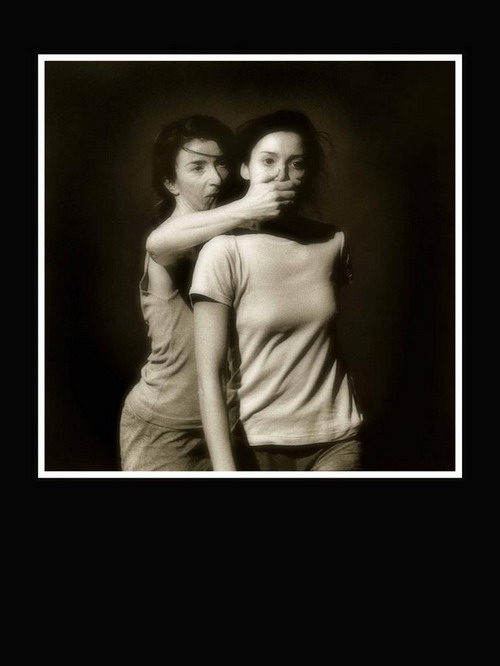
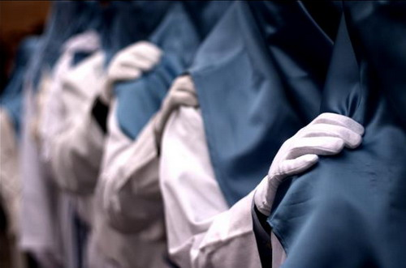
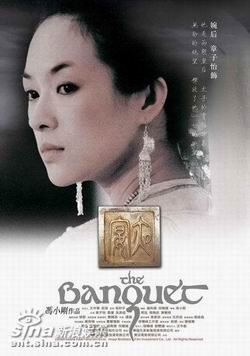
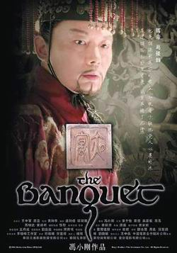
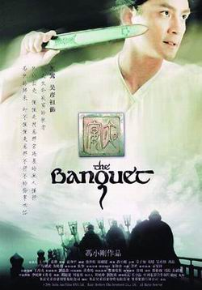
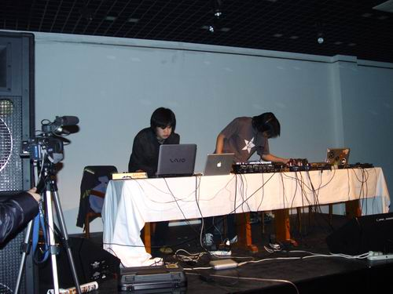
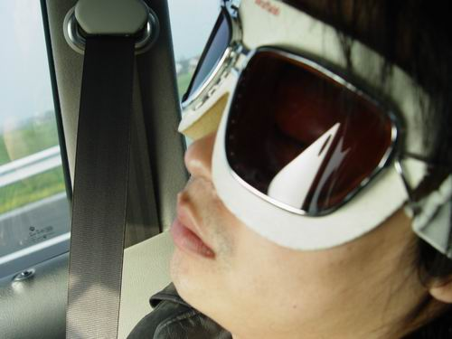
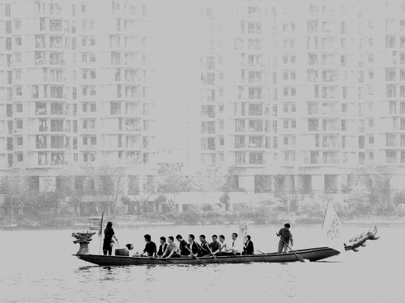

Archives : 2006-04
误导女青年的几句话 @ Apr 29, 2006
原文来自：北京女病人
一千个人里就有一千个哈姆雷特，所以，自己的经验对别人往往没有指导意义。生活也要爱情也好，看着光鲜也好凄凉也好，其实是如鱼饮水，冷暖自知。不过，总有人愿意拿往往不一定成功过的，因为失败而矫枉过正的个人经验指导别人，其实，根本就是误导。但是，在某个阶段的女青年往往将一些错误桥段奉为经典。这些姑娘们，其实都是规矩本分人，有的是过于善良厚道，有的是恨不得破罐破摔，然后这个时候听见人家说的貌似真理，直接就朝着沟的位置一路踉跄被拐带进去了。
男人啊就没一个好东西
这句话想必不陌生，在电视剧里在日常生活里，总能顺便就听见这句批判一半人类的话。它出自被欺骗伤害的女人，或者过来人对年轻姑娘的劝告，走的都是无限放大的路线。异曲同工的还有另外一句就是：男人都是用下半身儿思考的动物。一个女青年，如果这样看待本来应该和谐相处的异性，并且要从中挑一个人共度余生，却抱着仇视的心态。如果成了口头禅，那就好象别人请你吃东西的时候总说我不要不爱吃一样，时间长了，肯定没肉吃。再说，把自己打造成一个历经风尘沧桑的幽怨叹息形象，我瞧实在是傻得亏大了。
身为女子我们要相亲相爱
这句话从字面上来说是没什么问题的。但假如您是个女青年，同样有另外一个女子成天把这句话挂在嘴边，那您就要小心自己的生活状态了。
有的姑娘，看着也好好的，却总在男人手里受挫。于是她们总是喜欢在同性朋友面前倾诉，或做伴。闺蜜的好处是安全稳定踏实，不用象对男人一样情绪起伏想法纷纭。所以，如果有女子说这句话，就意味着她想叫您付出更多。最好每天陪着她吃喝玩乐谈心事儿，她做了什么不厚道的您也别计较。所以，其实正确的做法应该是：身为女子我们要和男人相亲相爱。
经济独立的女人更可爱
女人身边是要有钱的，或者工作。这样才不会象个金丝雀哪儿都去不了。不过，对嫁汉嫁汉穿衣吃饭的矫枉过正就是经济独立过头了。女人心疼男人花钱当然是懂事理，但是雄赳赳的非要扎个独立范儿，和人家算得一清二楚，其实对感情并无裨益。男人鼓起勇气追求请吃饭，饭后非要跟人AA算清；人家送个礼物，一副别人要占便宜的义正词严状。通常对男人的看法是事业比爱情重要，但实际上事业有成了以后还不是需要找人分享。男人爱上女人，就愿意给她花钱表达。千万别和什么傍大款混淆了，这个要是都分不清的话那您就被误导得太厉害了。您要跟人家算得一清二楚，人家奉献的小心灵受伤害，难免不转身找个全盘接受的去。独立的女人，搞不好还真以为自己太强了太有钱了给了男人压力呢。
你爱我就要为我改变
姑娘们总是很哀怨的面对男友的“恶习”——凡是她看不顺眼的习惯都是恶习。于是语重心长、泪眼婆娑的要求人家为了她而改变。基本上，这是用情感敲诈的方式来达到叫自己爽的目的。爱成了万能的口号。人家背着人单独长了那么多年，是歪是直早都定型，原来以为自己这款还魅力不错会招人喜欢，结果遇见个喜欢以爱之名掰树杈儿的，那得多郁闷啊。不许她掰的话就严重了，立刻上升到爱不爱，有没有诚意的高度。不听话的男人简直叫女青年们挫折感直线上升，认为自己的魅力值不够。小姑娘经常会为了自己的男人去踢球钓鱼而恼怒万分，怎么不想一下自己为什么不牺牲逛街的时间陪同呢？…结果，人家不用改变自己，而是换了女朋友，那么姑娘们会恨那些言情小说吗？
如果你爱我就应该知道
有些姑娘从来不会表达自己的真实需要。在她们看来我怎么想怎么做，如果你爱我，就会去揣摩。这是多么不厚道的方式啊。自己有事儿不说话非要人家猜，猜不对还勃然大怒认为人家不关心你体贴你。文艺青年最喜欢玩儿尽在不言中的范儿。找爱人又不是养蛔虫，小说害人，小说害人，谈个恋爱，经常搞得人家话都不会说了。
爱是轰轰烈烈的过程，结果并不重要。
因为这句话，无数女青年轰轰烈烈的进行了一场使君有妇也不怕的爱情争夺战。按道理来说，什么烟花转瞬即逝飞蛾扑火什么的，貌似映证此言不差，其实大错特错。
任何一段爱情，只要是阳光的健康的，都会朝着一个预定的结果走下去。其间阴差阳错，有可能并非都能走到完美结局。那么只要真心付出，结果有时也显得确实没那么重要。可是，被误导的姑娘们，那也不能直接不要结果直扑过程啊。如果一开始就知道是一段无望之爱，那得多拧巴多痛苦多绝望啊。这下倒好，直接从琼瑶派言情小说直扑法国闷骚文艺电影了。
两个人好好讲道理，没什么解决不了的。
假如男女之间发生争执，吵架闹别扭互不理睬。总有劝架的人如是说。然后，一根筋的姑娘就跑去和男人讲道理了，跟人家摆一个诚恳的促膝谈心彻夜劈情操的范儿，非要掰开了揉碎了跟人把道理讲清楚不可。结果往往事与愿违，更加鸡飞狗跳。
原因在于爱情是完全感性的，而道理是冰冷的理性。拿理性去挑战感性能成功才怪呢，根本就不兼容嘛。连圣经都说爱是恒久的忍耐。这意思就是爱他的优点也爱他的缺点。对于改变不了的事，出自感情的深浅，尽可能的包容。又不是辩论赛，一门心思说服压倒了你最爱的人，难道真的很有成就感？本来撒娇哄一下就过去的事儿，非要义正词严。对男人来说，其实是非常抗拒的——-谁能忍受自己来之不易的爱人一夜之间变成了童年时代的小学班主任？
爱一个人就无怨无悔
女青年们总容易陷入对爱情的完美想象和陶醉中，非常痴情并忠贞的爱上那个男人，爱上爱情。但是，爱情是流动的，变化的，平衡的。假如那人不靠谱儿，您就要果断的决定放手。不少姑娘因为对爱情的承诺，只希望单方面完美的进行下去；又或者付出太多，舍不得放手，然后找了一个看似高尚的理由来安慰自己。现实中，也确实见过面对一次次伤害和背叛依然痴心不改的姑娘们。用句流行的大俗话说，那就是错把犯贱当真爱。
女人应该是什么什么样的
在这里，什么什么样儿，您可以理解成任何样子。矜持的、温柔的、性感的等等等等，具有一切女人的特质。很多女孩子从洋娃娃时代，就乖乖的按照这样的性别角色塑造将自己变成一个被传统文化接受的女子。其实，也可以是野性的、潇洒的、自然的、阳刚的。这已经属于女权主义的论调了。但是，假如男朋友对着姑娘说，你一点都没人家的女朋友温柔，或者说，你的衣服实在太暴露了的时候，应该怎么办呢？女人应该是什么什么样儿，于是女青年就屈服了，扭曲着自己的性格和快乐去迎合爱情的成长。其实，每个人都是多面的，可以文静，也可以活泼，只要，是自己的选择就好。
没有爱情的女人注定是不幸福的。
这句话被广大男男女女一起认同。女强人在被挑剔强势的时候，看向她身旁的目光是可怜的，即使是名人，也难逃被同情的命运。难道这句话真的成立吗？单身女子，自然有单身的幸福。假如一个人，没有独立的完整人格，只希望如白雪公主一样躺在那里等待王子的拯救，没准王子还会因为娶回去一个傻子后悔得捶胸顿足呢。爱情不是救命稻草，单身也未必凄惨无比。假如被暗示了，被误导了，那才等于把自己的幸福完全不负责任的交到了别人的手里呢。
这句话的理解是，无论单身与否，幸福快乐的女人才会有幸福的爱情。假如您成日郁闷哀怨暴怒，即使有爱情，也会变成男女混合双打的。
。。。。。。 @ Apr 29, 2006
据说心理医生都有精神病。

怎样成为一个文坛装逼犯(转) @ Apr 28, 2006
原文来自：傻逼老愤青罗永浩的BLOG
装逼犯分两种：装得好的和装得不好的。如果装逼装得好，其实也挺牛逼，但如果装逼装得不好，那就还不如直接干脆的傻逼。
在电影导演里，王家卫是一个装逼装得好的例子（实际上他是一个天才的装逼导演），娄烨、张元之流是装逼装得不好的例子。在电影演员里，约翰.马尔科维奇是最伟大的装逼演员，装逼装得非常酷，汤姆.克鲁斯则是装逼装得不好的例子，装得不好的还有谢霆锋、基努.里维斯这样的货色。在音乐人里，喜多郎、达明一派这样的是装逼装得有型有款的例子，雅尼、周杰伦、张震岳这样的是努力在装，但确实装不好的例子。摆弄文字的人里，古龙是个了不起的装逼作家，温瑞安是个装不好但“一直在努力”的装逼作家。余秋雨、钟道新、方文山这样的也都是装得不好的例子。还有最近自取其辱，写装逼的评论，被年少牛逼的韩寒修理得从新浪博客上失踪了的老一辈文学评论家白烨老师。新浪博客上写装逼文章比白烨还“端庄”（即又端着又能装）的，我知道的好像只有一个张亚哲老师。
这是他的博客地址： http://blog.sina.com.cn/m/zhangyazhe
张亚哲老师的装逼文章的特点是虽然装得不好，但很用心，“字字都是血泪”。每一个立志装逼到底的文学青年都应该看看他的博客。我最初想主动替张亚哲老师的blog做广告时，首先想到的广告词是这样的，“朋友，你想成为一个装逼犯吗？你想成为一个文坛装逼犯吗？你想成为一个令人羡慕的文坛装逼犯吗？啥也别说了！现在就拿起鼠标，点击下面的地址吧。地址是： http://blog.sina.com.cn/m/zhangyazhe ” 后来感觉太像永远神奇的电视购物广告了，所以才改成了现在这种朴素的样子。

让我们欣赏一下张亚哲老师的装句（即装逼的句子）摘抄。（老罗搜集整理）
下面的这部分在他的文章中是比较普通的（softcore）：
“自虐的文学博客要有冷血的风度气质，忍受寂寞的超人耐力，最好看看王尔德扭捏着维多利亚的唯美腰肢在美利坚讲授生活和美的悲凉作派”
“当我站在陡峭的敦煌三号窟内，仰望盛唐坐佛的悲悯神态与青莲浅笑，美轮美奂，我的泪水无法控制滚滚而下。而这些中国的寂寞，我每每深刻感同；而这些中国的沦丧，我每每不可承受。”
“在伦敦参观弗吉尼亚伍尔夫的故居，我往往会回不到从前，就像中央火车站早已消失的汽笛，我还在等待蒸汽时代的爱情。法国中尉的女人中有一首诗，每个人都是一座孤岛，非常的存在主义，非常地感伤而坚强。那么多年，年轻人不再会为走出非洲而流泪，而1988年的那个夜晚，我总在重复最后华尔兹的片断，重复雷德福的独白，重复狮子与草原。泪如雨下。而多年之后没有一次有勇气看完精美的dvd，甚至bfi的大银幕。逃避岁月不可遏逆的回溯。”
“前几天在卫视电影台偶然看见2046章子怡的蔻丹脚趾甲，刘嘉玲的厚腻脂粉，梁朝伟招牌式的诡谲笑容，伴随故意显露的眼角皱纹，让人再次经历王家卫的野蛮布尔乔亚摧残。谢天谢地，音乐还是博萨诺娃式的，影调还是杜可风30岁时兰桂坊宿醉的风格，花样年华的高棉吴哥窟结尾已经让所有王迷欲仙欲死，不要再来叶锦添张叔平，别让王菲傻不啦叽的呆滞以表现存在主义电影30年前的空白与氛围。王家卫的大提琴拨弦已经挑逗了所有华语电影的神经，这个戴着黑框珐琅镜架的上海人，已经沉醉于摇摆的暧昧情色，而且将那个年代的幽怨记忆强迫表达并且还将自娱自乐的持续下去。”
口味重的还可以再看看下面的这些句子，这些是张亚哲老师的文章中比较狠比较失控的（hardcore）：
“1988年我在青春期的自疑与激情中漫无目的的读书思考自我沦丧，那是一个空气中弥漫着婴儿般启蒙气息的时代。”
“而当这个时代哭泣与感动的内容已然完全转变给金刚的时候，我义无反顾肃然起敬于那些为了真理炼狱般的光芒诱惑而献出一己肉身的逝者”
“如今我习惯于将自己的文字麻木在风花雪月的冰彻骨架上，那使我不但可以逃避拷问自己的灵魂，而且坚强不可逆转的对所有的现实表达谄媚的尊重与敬意。”
“2006年的除夕，我陪伴快速老去的父母跌坐在1926年的钢筋水泥里，享受着电视里春晚的欢声笑语”
“中国文化的乐感因素气韵深长，智慧追求的魅惑空灵的飘荡在我们的天空。”
佳句太多，不再抄录了，建议有志装逼的朋友们去看原文，再一次做广告，地址是：http://blog.sina.com.cn/m/zhangyazhe
对于热爱装逼的人来说，单是看看下面的张亚哲老师的文章标题就应该“义无反顾肃然起敬于”一颗勇于装逼，勤于装逼，乐于装逼的心灵了。
■ 关于那些阴暗的记忆-当波兰斯基遭遇狄更斯 2006-03-06 19:07:07
■ 残酷的话语霸权与陈凯歌的恐惧记忆 2006-02-20 18:19:48
■ 一个批判愤怒者的自我愤怒 2006-02-09 11:58:14
■ 面对激烈流氓之辩的胜利宣言 2006-01-18 20:48:14
■ 中国青年的心灵史不能就此完结 2006-01-14 18:52:15
■ 万福玛丽亚博客命运符 2006-01-11 12:39:11
■ 这难道就是我们的辉煌上海 2006-01-05 09:54:30
■ 中国民办教育的哈利路亚 2005-12-21 16:11:00
■ 什么是一地鸡毛的激情与背叛 2005-12-01 13:51:57
只要悟性不是太差的，看完张亚哲老师的这些装文（即装逼文字），基本上装逼创作就应该入门了。那些文字悟性差又好这一口儿的朋友们如果会电脑编程，可以把张亚哲老师博客上的文字全部导入电脑分析一下，相信可以轻松弄出一个装逼写作速成软件。为了装逼，千万不要给软件起中文名，不妨叫做ZBF MadeEasy 1.0 beta3 Professional Edition。如果你故作神秘，对软件名称的含义不加解释，还可以让那些不知道内情的人苦苦思索ZBF到底是猪变疯，真不忿还是准备饭。这时候如果你面带诡谲的笑容继续不做任何说明，他们一定会愤怒地指责你说，“他妈的，真是个装逼犯！”
悟性差，又弄不到这种软件，还执意想成为装逼犯的可以和我一起分析一下这类装逼文章的特点。虽然成为一个好的装逼作家需要一些天分，但如果你的目标只不过是象张亚哲老师一样想在装坛混得一席之地还是比较容易的，并且完全可以速成。
首先，要想装得中文底子好，就尽可能多用书面语，至少是旧式口语，尤其是能表现你特别有思想因而无比苦恼的“徘徊”、“踟蹰”、“逡巡”、“彷徨”、“疏离”、“踌躇”、“愤懑”等等。
象声词要用现在的人绝对不用的，如“毕毕剥剥萧萧许许作作索索窸窸窣窣”，装逼装到得意处，如果忍不住笑出声来，可不能“哈哈”，要“哑哑”。你要装一只国学底子深厚的狗，那就绝对不能“汪汪”，要“狺狺”。
你要是想“很鲁迅”或者“很五四”，那就把“去吧”写成“去罢”，“她”叫“伊”，“或者”用“抑或”，“如果”换作“倘若”，“比如”要说“譬如”，“因为”则是“因了”，还有，鲁迅那时候“那时候”叫“其时”，“松懈”用“弛懈”，“原谅”用“宥恕”，“点头”用“颔首”，既然颔了首，“馒头”自然也不能吃了，改吃“馒首”。这样说话可不是为了“讲究”，而是为了“考究”，都已经装到这个份儿上了，“已经”就改成“已然”罢，“常常”也不得不“每每”了。
要是抄五四风格抄烦了，也可以生造愣词或愣造生词，比如遏止逆转叫“遏逆”，果敢勇猛叫“果猛”等等，嗯？已经有人这么干过了？那就翻转颓糜为糜颓，再把屠戮拧成戮屠。为了显示个性，用词上要做到为了不一样而不一样，比如既然大家都说夜色漆黑，你不妨象张亚哲老师那样说酱黑，即使夜色酱黑听起来很蹩脚。重要的不是效果好，而是和别人不一样。
中英文混杂这样的庸俗路数，现在外企扫地的大婶都会，所以要尽可能少用，可不能像声名狼藉的李傲吃老师那样。偶尔用的时候要找个大家都不认识的词来说事儿，比如floccinaucinihilipilification 就不错。
考虑到中英文混杂的做法现在在社会上差不多已经引起公愤了，所以你最好用其他的方式喷射你的洋墨水：坚持把小资产阶级叫小布尔乔亚，把古捷克风格和臭小资作派绑一起叫波波，把两份工资不生崽儿叫丁克。
要真正显示学贯中西，混杂英文、大量使用音译名词都是低级的手段，要用更高明的方式制造“渊博感”。希腊神话是基本功，普罗米修斯、美狄亚、坦塔罗斯、阿佛洛狄忒要整天挂在嘴上，要是看见谁专门喜欢老女人，可不能说他有恋母情结，要说他有“俄狄浦斯情结”。圣经当然不用真去笨笨地看上一遍，但是“属灵”、“救赎”、“基玛林”、“和散那”、“弥赛亚”、“哈利路亚”等等是啥意思一定要大概查一查然后猛用狂用。
光弄这些神神鬼鬼的还不够，还要弄点有“学术感”的东西。和上世纪的装逼犯喜欢满口“莎翁”，“托翁”不同的是，现在的装逼犯更喜欢拿自由主义的思想家给自己抹粉。只要一提自由主义，你就随手把罗森塔尔、阿尔贝尔、巴特摩尔、达尔、桑德尔五个牛逼哄哄的“尔”一股脑砍出去，五个“尔”齐发，砍谁谁都会晕。你要是只会提家喻户晓的亚当.斯密、托克维尔、哈耶克，“你都不好意思跟人家打招呼”。
这些前期准备做完了之后，为了融会贯通，再找公认的装逼文字写作者的作品看上百八十本也就差不多了。除了前面提到的古龙、温瑞安、余秋雨、钟道新、方文山之外，还推荐汪国真和董桥。如果想极速速成，优先推荐古龙、钟道新、方文山和张亚哲老师。
这些工作也结束后就可以进入实战演习阶段了。
首先是长句堆词训练，我们不妨试试这样写：
这部回归根源的杰作在戏谑之魔已然伴随着无厘头血液分分秒秒畅淌于我们浮躁体内的Postmodern解构主义时代，赫然地同时也是令我们惊诧不已地捕捉到了经典影像虽饱经恶俗浮华的风吹雨打渐呈式微之势然而却始终一已贯之的骇人的美。

在书面语和非人类语言的狂轰滥炸中点缀性的使用粗话以示自己不是书呆子，并辅以哲学名词使粗话显得凛然不可侵犯：
原文来自:傻逼老愤青罗永浩的BLOG
1994年我无意识地读到刘震云无键盘写就的“小林家的一斤豆腐变馊了”时，冥冥中已注定了我终将在一个不知是一地鸡毛还是一地鸡巴毛的猥琐人生里面对藏有无数近乎是大恶的内心，我那一度欣然深陷于偶因论的泥潭中不能也不想自拔的灵魂——如果我还有灵魂——在滂沱的冷汗里，在伊壁鸠鲁的思想也不能给我以丝毫抚慰的境地里，究竟能覆盖以怎样的苔藓。涩灰色的空中仿佛传来让.吕克冷冷的声音：如果大粪可以卖钱，穷人将失去他们的屁眼儿。
（温馨提示：让.吕克就是著名导演戈达尔，但是把他叫作让.吕克更装逼，就像把希特勒叫作阿道夫一样装逼。）
引用名人名言在任何时代都很装逼，但是不要引用那些家喻户晓的名人说过的妇孺皆知的名言，也不能用那些被用滥了的手法，比如“记得爱迪生曾经说过......”，这样说会被人砍死的。
你可以这样，“当隐居在阿耳忒弥神庙里的大哲赫拉克利特悠然地道出‘希望通过博学来获得智慧是徒劳的’这句话时，他并不知道这句话会在2500年之后一个苦雨绵绵的午后使得一个坐拥在小镇图书馆的书城里的羸弱亚细亚少年面如土色，如遭雷殛。果毅地放弃了无目标的11载滥读之后，这个曾经惨绿求知的少年蓦地回首时看到的是一片虽已不复鹿港然而依旧旷蓝的物质与心灵的天空。这个造物主恩宠的少年就是我。
按照类似的路数勤加练习，在一本厚厚的练习册上写完装逼900句的时候，就差不多可以行走江湖了。
***************************
明天，我们将继续探讨的主题是，怎样成为一个优秀的文坛装逼犯，以及从张亚哲老师的低级错误中，我们学会了什么。
《夜宴》海报 @ Apr 27, 2006



我看.我听 @ Apr 25, 2006
很久没有介绍电影和音乐了，罗列一下最近看的和听的：
电影：
1、法文名：《BAISE MOI》
英文名：《RAPE ME》
中文名：《悲情城市》
这部电影显露了最细微最直接的性交和暴力镜头，由于色情成份极浓，本片成为2000年法国最具争议的“作家电影”。
两个女人在仓库内惨遭强奸，这次特殊的经历改变了她们的生活，曼妮杀死了一个对她表示关心的亲人，而娜丁则因一口大麻掐死了同屋的女伴。两位主人公相遇，从此走上一条复仇之路，以性与子弹回报这个世界…… 被强暴时她们是弱者，反击现实世界的她们变成主宰他人命运的暴力份子。让我想到电影《CRASH》，有异曲同工之处。不要报着“逃避生活”的目的来度过人生，微妙的人际交往会给不同的人带来不同的心理回应。由涅磐乐队·Nirvana. 主唱兼吉他手：柯特·科本 Kurt Cobain演唱的一首老歌的歌名也叫：《RAPE ME》。有人说kurt哼唱的那首“rape me”使他懂得在他深情吟唱的背后藏了些什么，这首歌唱出了我们内心受伤的一面。每个人都会有受伤的时刻，每个人都有一颗受伤的心。
Rape me,Rape me, my friend
Rape me,Rape me, again
Am I the only one?
Hate me,Do it and do it again
Waste me,Rape me, my friend
Am I the only one?
My favorite inside source
I’ll kiss your open sores
Appreciate your concern
You’re gunna stick and burn
Rape me,Rape me, my friend
Rape me,Rape me, again
Am I the only one?
Rape me!
现实强暴我们,我们强暴世界。
2、：英文名： 《Underworld: Evolution 》
中文名：《黑夜传说2：进化》
我很喜欢类似吸血鬼的电影，之前看过一部《Van Helsing》，里面的吸血鬼造型设计的很有意思，镜头的色彩表现和动作画面都有一些魔幻的感觉，黑暗世界的幽深与人类世界的对比，不少镜头都很漂亮。
3、英文名：《Deuce Bigalow: European Gigolo》
中文名：憨直舞男2
这是部喜剧片，恶俗、搞笑。还有第一部，可惜我还没看过。通过这部影片可以大致了解荷兰的一些风土人情。比如抽大麻在荷兰是合法的，著名的橱窗女郎，天气预报员脱衣速度之快等等。一头“秀发”、脸上经常泛起不尽的笑容的罗伯·施奈德似乎对自己的外型充满了自信。也正是这个充满了市井小男人风格的“别致”外型让众多的影迷们记住了他。
音乐：
1、Sheryl Crow-《Wildflower》
作为当今主流流行摇滚乐坛最受欢迎的女歌手之一，今年已年过43岁的雪儿·克罗（sheryl crow）在2002年的专辑《C’mon, C’mon》推出时隔三年之后，终于发行了个人的第五张录音室专辑《Wildflower》（野花）。本张新专辑发行首周以14万张的销量名列美国Billboard专辑榜的亚军位置，与上张专辑《C’mon, C’mon》成绩相同。
昨天晚上在车里听《Wildflower》专辑里的“Always On Your Side”听得我鼻子酸酸的。这张专辑基本上每首歌都好听。
Always On Your Side ：
My yesterdays are all boxed up and neatly put away
But every now and then you come to mind
Cause you were always waiting to be picked to play the game
But when your name was called, you found a place to hide
When you knew that I was always on your side…...
除了喜欢All I Wanna Do和Live It Up之外，另一首很好听的歌是“We Do What We Can ”：
Downstairs they’re playing Kenton
The house set to swing
I lay in my bed
And listen to everything
Cause Leo’s in rare form tonight
His trombone sings so sweet
This is the room
Where they all come to meet
He said
I do what I can
I live for the moment
And that’s who I am
Yeah that’s who I am
And isn’t it good
If we could freeze moments in time
We all would
But I do what I can
I do what I can
Downstairs he’s playing Kenton
The Magnavox sighs
But oh how the music has changed
In all of our lives
He says “nobody listens
To modern jazz”
And I’ll never have what those guys have
He says
I do what I can
I work for a living
And that’s who I am
Yeah that’s who I am
And it’s good to be alive
But everything’s different since Leo died
I do what I can
Is this the end of the modern world
What could it mean for a young girl
Who sees the pain on his face
He does what he can
The procession on the TV screen
What could it possibly mean for a man
Who’s come this far just to turn around
Could there still be life in Kenton’s swing
With the Kennedys gone and everything
Those sad rows of houses with their optimistic colors
Democrat grandparents and draft-dodging brothers
Riots down the street and discontented mothers
We do what we can
......
自控*不自控 @ Apr 25, 2006
 Momentos
by Raphael Lopez
Momentos
by Raphael Lopez
一直要收拾季节里不穿的和穿的衣服，可是仍然如山的堆着，很内疚。想穿那条N年前肥肥的米色工装裤，可是没找到....昨天突发其想，为自己的服饰和鞋包在电脑里编辑归档，按毛衣、衬衣、外套、背心、体恤、仔裤、裙子、鞋子、包、腰带等等拍照分类储存在EXCEL文件里，查找起来也方便。有很多很多的衣服，可是真想穿的时候却好象找不到衣服穿，这是令人头痛的事。
不再频繁逛街购物，不过看到气质美女还是会很受鼓舞的去突击买点衣服回来。除非你是从事与时尚服装相关的职业，不然频繁购物似乎是极度空虚的表现。因为无所事事，因为没有寄托，因为内心空虚，因为虚荣，因为价值得不到体现而希望通过“华”众来取宠，等等多种因素导致频繁购物，欲壑难填！这种现象和一些特别爱表现的人有着相似的心理问题，爱表现和频繁购物都是难以自控的表现。难以自控还表现在豪不节制抽烟、喝酒、泡妞、爱出风头等等方面。大部分人都喜欢相对透明的人，可是透明的人似乎又很容易受到伤害。一个自控力很好的人相对也是不透明的，很难真正地接近他/她。一个控制力很好的对象，是否会可爱过难以自控的人？不过没有自控力的男人一定是非常可怕的！
下午公司请某咨询公司的老师来授课《如何成为谈判高手》，最后总结是：“读不懂书，是遗憾。读不懂人，就不会有商业成功。”再加上有自控力是否更好一些?
女秘书PK老板 "邮件门"传遍全国外企圈 @ Apr 25, 2006
来源：北京青年报(06/04/25 07:28)
如果你今天还不知道“史上最牛女秘书”是谁，或者你还没收到那封在网络上引起轩然大波的邮件，只能说明你不是那些著名外企中的一员。最近一周，从北京、上海到成都、广州、南京……全国所有知名外企都在疯狂转发一封来自EMC（全球最大的网络信息存储商，总部在美国）北京总部的电子邮件：EMC大中华区总裁陆纯初和他的高级女秘书因工作琐事发生激烈争吵，导致后者被迫离职。这起本该在企业内部消化的事件，却因牵起“老外和中国员工的文化障碍”的敏感话题，数天之内成为各大外企员工和网络舆论谈论的热点。
昨天上午，当事人瑞贝卡(秘书的英文名)无奈地告诉记者，“这件事传得太广，我都找不到工作了。”而面对记者的质询，EMC公司从美国发来的邮件却认为“该员工离职只是个人事件”。目前，该邮件仍在毫不停歇地转发中。
■下班锁门引起总裁不满
4月7日晚，EMC大中华区总裁陆纯初回办公室取东西，到门口才发现自己没带钥匙。此时他的私人秘书瑞贝卡已经下班。陆试图联系后者未果。数小时后，陆纯初还是难抑怒火，于是在凌晨1时13分通过内部电子邮件系统给瑞贝卡发了一封措辞严厉且语气生硬的“谴责信”。
陆纯初在这封用英文写就的邮件中说，“我曾告诉过你，想东西、做事情不要想当然！结果今天晚上你就把我锁在门外，我要取的东西都还在办公室里。问题在于你自以为是地认为我随身带了钥匙。从现在起，无论是午餐时段还是晚上下班后，你要跟你服务的每一名经理都确认无事后才能离开办公室，明白了吗？”（事实上，英文原信的口气比上述译文要激烈得多）。陆在发送这封邮件的时候，同时传给了公司几位高管。
■秘书回了咄咄逼人的邮件
面对大中华区总裁的责备，一个小秘书应该怎样应对呢？一位曾在GE和甲骨文服务多年的资深人士告诉记者，正确的做法应该是，同样用英文写一封回信，解释当天的原委并接受总裁的要求，语气注意要温婉有礼。同时给自己的顶头上司和人力资源部的高管另外去信说明，坦承自己的错误并道歉。
但是瑞贝卡的做法大相径庭，并最终为她在网络上赢得了“史上最牛女秘书”的称号。两天后，她在邮件中回复说，“首先，我做这件事是完全正确的，我锁门是从安全角度上考虑的，如果一旦丢了东西，我无法承担这个责任。其次，你有钥匙，你自己忘了带，还要说别人不对。造成这件事的主要原因都是你自己，不要把自己的错误转移到别人的身上。第三，你无权干涉和控制我的私人时间，我一天就8小时工作时间，请你记住中午和晚上下班的时间都是我的私人时间。第四，从到EMC的第一天到现在为止，我工作尽职尽责，也加过很多次的班，我也没有任何怨言，但是如果你们要求我加班是为了工作以外的事情，我无法做到。第五，虽然咱们是上下级的关系，也请你注重一下你说话的语气，这是做人最基本的礼貌问题。第六，我要在这强调一下，我并没有猜想或者假定什么，因为我没有这个时间也没有这个必要。”
本来，这封咄咄逼人的回信已经够令人吃惊了，但是瑞贝卡选择了更加过火的做法。她回信的对象选择了“EMC（北京）、EMC（成都）、EMC（广州）、EMC（上海）”。这样一来，EMC中国公司的所有人都收到了这封邮件。
■邮件被数千人转发
昨天上午，记者打通瑞贝卡的电话，她已不愿回忆那两天的经历，“这只是我和EMC之间的事，跟别人没关系”。可就在瑞贝卡回邮件后不久，这封“女秘书PK老板”的火爆邮件就被她的同事在全国外企中广泛转发。
近一周内，该邮件被数千外企白领接收和转发，几乎每个人都不止一次收到过邮件，很多人还在邮件上留下诸如“真牛”、“解气”、“骂得好”之类的点评。其中流传最广的版本居然署名达1000多个，而这只是无数转发邮件中的一个而已。记者在邮件上找到了两位留有私人邮件的人士。黄小姐供职于IBM中国研究院。据她回忆，该邮件最早从公司同事的大学同学处转来，后来的来路也多为业务关系、大学同学等。张先生就职于GE北京总部，“我收到邮件比较早，当时就转给了成都和上海的大学同学，结果后来又从南京同学那里收回来了”。
从邮件的转发过程中，可以发现这样一个顺序：EMC-＞Microsft-＞MIC-＞HP-＞SAMSUNG-＞Honeywell-＞Thomson-＞Motorola-＞Nokia-＞GE……这些大名鼎鼎的外企大多为IT或电子类相关企业。
■女秘书已离开公司
邮件被转发出EMC后不久，陆纯初就更换了秘书，瑞贝卡也离开了公司。目前，EMC内部对此事噤若寒蝉，一些参与转发邮件的员工挨个儿被人事部门找去谈话。
尽管无论是邮件附加的个人点评还是BBS上的讨论，力挺瑞贝卡的声音都超过了八成，但外企人力资源部的管理层却并不买账。昨天早上，记者刚在电话中表明身份，瑞贝卡就明白了，“这事儿闹得太厉害，我已经找不到工作了”。她没有料到邮件会被转发出去，也没有料到目前的局面。
最后消息
EMC回应”邮件门”
“邮件门”对陆纯初有何影响？昨天晚上，陆纯初授意远在美国的EMC公司大中国区市场部经理吴薇给记者发来声明。这份外交措辞的声明表示，“最近这位北京员工的离职完全是一个个人行为和独立的事件，EMC中国区的员工都充满了信心与EMC一起取得更大的发展。”有IT业资深人士分析，像对大中华区总裁这种高管的评价，一般只有美国总部的总裁和总部人力资源部的主管才有发言权。
解读
中外员工文化冲突？
陆纯初(Loke Soon Choo)，男，新加坡人。EMC公司大中华区总裁，统管EMC在中国的所有运营业务。瑞贝卡是他的高级秘书。据悉，陆拥有新加坡大学工商管理学位，是名资深的IT专业人士，也曾出任IBM、西门子等知名国际企业的高管。在赴EMC履新之前，他曾担任甲骨文大中华区总裁。
在网络舆论中，陆纯初和瑞贝卡之间到底是不是积怨已久成为人们乐于分析的一个话题。因为在外企的文化里，出于礼貌，中方职员在回复上司的英文邮件时，一般也应选择英文。
因此，瑞贝卡用中文回复英文邮件的做法被认为“是两种文化的故意对抗”。EMC新加坡公司的一位职员ROBIN在中国的一个IT论坛上说，“以一个总裁秘书的职业素养，不可能毫无背景就突然用中文回复这样尖锐的邮件。”昨天晚上，记者就此问题再次和她通话时，瑞贝卡显得更加小心，“我不会谈论这件事”。记者追问两人之前是否有宿怨，瑞贝卡的回答耐人寻味，“不要推断我和他的事，我根本不认识他”。
记者找到一位在邮件中留下地址的西门子的YANGQING小姐。YANGQING小姐曾在惠普工作过，她认为中西文化差异一直都存在。“以前我们这里发生过中国人越级告状的事，但德国派专人来处理的结果，还是中国人走人”。她认为，适应不同文化的管理方式应该是进入外企的中国人的必修课，“总之无论在哪里，都甭想和老板争论”。
专家解读邮件传遍全国现象
转发者过瘾仿佛在骂自己的老板
“每一个转发邮件的人内心都在欢喜，仿佛骂的是自己的老板”，知名企业文化研究专家孙虹钢昨天接受记者采访时说，这个秘书反应有点过激，她违反的是明规则而不是潜规则，“毕竟任何企业的游戏规则都是老板定的”。
瑞贝卡这种做法看上去十分过瘾，其实相当不职业。她今后找工作会很难。她违反的不是潜规则而是明规则。谁会要一个喜欢破坏明规则的人呢？一封邮件抄送那么多人，这种方式必然造成不和睦。难道没有其他方式可以沟通吗？这种方式对当事人没有任何好处，职场中无人会接受。
这封邮件几天内传了好几千人，全国的外企圈子都知道了。这是为什么？“说白了，人们在职场中的心态不好，很多人都很郁闷。比如，工作不开心、才华得不到施展、上司没本事却要管自己、投入产出比不合理、和老板关系紧张……这时候，如果有人出来攻击老板，那一定是解气的。每个人在转发这个邮件的时候，说不定都在幻想着有一天骂自己的老板。”
惑 @ Apr 21, 2006
早晨...有的轻快，有的温和，有的奢侈，有时会有些小郁闷，有时会很幸福。
曾有人说人一辈子要么一抹黑走到头，就怕半截突然醒了最残酷。
浮躁 @ Apr 20, 2006
广播里提倡全民读书，读书祛除浮躁。
十几年前读江宛柳写的《我在寻找那颗星》，号啕大哭，并且抑制不住的抽泣。看《收获》上发表的长篇小说《活着》，当时电影还没出来，每天看小说每天沉浸在活着的苦水里，那个苦呀...是文字打动人还是我那时太纯真？现在能看进去书的，简直就是莫大的幸福。好几期《收获》送来什么样现在还什么样，原封不动的摆放着，偶尔内疚的想着看书...看书吧，如果真要看书了还是选择看画画，包括那些文字特多的说明书也懒得逐行阅读。怀念过去的环境，看书是当时最大的乐趣！
变化 @ Apr 19, 2006
有段时间了，我的舌头好象被什么咬着，说出来的话都是自己不想说的。MP3随身听的好处在于能让人沉默而不觉得尴尬。
以前话多，现在话越来越少，不知道该说些什么。
现在话少，以后是不是话会越来越多？
所有的人都在变化，每一分每一秒。
不要再说你不会变化...
昨天晚上到虎子参加活动的酒店，看到吴大维作为某房产形象代言出现在小舞台上，看过小柯和另一个甜美女孩的舞蹈，看过声乐串串烧，看到模特走猫步，一个舞台艺术表现形式多起来，感觉就象个大杂烩。没有了朱屺瞻美术馆里那场浓缩的精华。
白天上班的时候，脑子突然冒出一个场景，小柯要是坐在我现在的办公桌前，进行我手上的工作，长年累月下来会是什么心态？是不是会有枯萎和逐渐死亡的感觉？原来小柯在美国强生工作过三年，考虑是否辞职进现在的工作室考虑了一年。据说每天早晨一打开电脑就是100多封E-MAIL，电话里的 “喂”差点变成每天的口头禅......有谁会用前男友的名字给宠物起名字？小柯给她的小狗起名C小吊。对她的真性情有些许好感，很自然的一个女孩。不同工作培养了不同的心境，就象big friend说的：“你进了国企，虎子成为前卫艺术工作者。”
非主流 @ Apr 17, 2006
夜色下的朱屺瞻美术馆，门头低调简洁，透着令人想要探索的气质。虎子问我：“南京这种活动很少？”的确少，也或许是得不到信息，不过即使有，对于南京所谓的艺术工作者我会有种莫名且刻意的近而远知。观察中发现相同圈子南北方艺术工作者在风格、方式（包括做人方式）、气质上会有些区别。典型的是在艺术工作者前面加上“上海”两个字，定义则有些微妙。负责影像的S.T.来自上海，从晚上7点多到9点多一直在调试投影，演出的时候仍然是个大白墙，任何影像也没有，他的身份马上转变为自由观众，赋有典型南京华新形象，用北京话讲“不靠谱”。据说日本人组织的活动，在所有艺术表演者到达前，前期准备工作均会就绪，机器连接好，线头贴好，暂且放下民族情结，我们是否可以思考一下日本人这种工作到极致的精神和态度？
我并不了解虎子目前的名气有多大？艺术造诣有多深？从频繁被邀请的机率可判断一二，在我看来他所涉入的艺术领域尚属小众艺术，小众既避免滥俗又与商业无关。在他身上看不到明显的“功利”，更无极尽所能的炫耀。某人说过：“希望别人把我看得很轻很轻，轻得如一粒微尘，在不经意时刻体现其价值和份量。”“不经意时刻”并不是那些欲望与自负充斥眼神、炫耀和自大写满嘴角的人所制造出的“欲擒故纵的不经意”！
“你以什么来判断艺术的好与坏？”好坏其实没有唯一的标准，用好坏两个字来定义艺术亦有不妥，在我看来被接受的艺术是能引发精神共鸣，理解、满足。A说：“喜欢、接受。”小柯：“在喜欢的艺术面前，无论主观还是客观都不会受到自己控制。”这里特别要提的是西方观众在观看表演时，不是出于喜好保持安静或热烈鼓掌，而是出于礼貌和对艺术的尊重。这也是中国人需要思考的问题。
这次拿到虎子新出的《两个人的旅行》 ，电子乐效果非常好。渐渐喜欢上这种音乐风格。
前卫艺术工作者:虎子 & 小柯

虎子 & B6


小柯，Christina，虎子

外国观众居多，虎子表演的时候有三个外国人居然忘情地躺到调音台下面

沪宁高速上熟睡的虎子，这副大大的眼镜很有意思，据说是在意大利古董市场EUR90.00购买的，60年代制造。

前卫现代舞表演者：小柯

来自TOOKU的《Diao就一个字》 @ Apr 13, 2006
没想到艺术气质浓浓的他，写字这么“爽”？看不出这面的他，那么...他是真的酷到骨子里了。在他的BLOG连接中似乎没有一个女性的站？这么不喜欢女人吗？
有一种人，他会在表面上对你恭恭敬敬，说话语气不紧不缓，前头会恭维你一下，后头以一连串看似无懈可击的理由，理直气壮地将你踩在脚下，末了，还吐两下口水。在他人看来他是有理有据，在你看来你会觉得自个羞愧无比。
大凡干过记者这个职业的，多少都有点这个本领，尤其是那些自以为有些来头的。他们更加会把你的文字一一解构出来，列出你无法想象的种种荒谬。
我就diao我承认了，你又能怎样？
TOPKU BLOG：http://www.topku.com/
Dreams @ Apr 13, 2006

这周繁忙、琐碎、压迫感、很郁闷的一周，这些情绪大多来自工作。这种不良的情绪直接或间接影响到其他方面，本可以轻描淡写一带而过的事情，却因为情绪的原因格外有压迫感。我在郁郁寡欢，整日整夜，得想办法解决...
空白 @ Apr 10, 2006
还有20天左右就是伟大的劳动节，上次旅行是去年公司组织去的三亚。多长时间过去了？特别...特别...特别想给自己的心情放一个轻松而惬意的假期，什么都不想，什么货也不用催，不看做作的嘴脸，听不到虚伪的声音。20天不足以为一个遥远的目的地做充分准备，如果可以背起行囊就走，等于将自己投入一个茫然的天地，然后一无所获归来？想去的地方很多，拉萨、塞班岛、印度、欧洲、澳洲自驾车等等，保守的计划仍然是云南和贵州，这两个我曾经去过的地方，仍然被深深吸引着。GRACE4月24日和她的同学金花从HK返回丽江。问GRACE问她的先生云南哪里值得推荐，也许他们还没有一个游客知道的多，他们是以生活的心情停留在丽江的，有着细水常流的朴素情感。长时间处于焦虑琐碎的工作里，由不得不向往...这种朴素的情感...
QH捏的泥人：GRACE和她的先生，GRACE穿着典型的纳西族服装

莫愁湖边 @ Apr 09, 2006
因为划龙舟比赛训练日，得以走进莫愁湖公园，里面俨然快成了儿童游乐场，草地上坐着站着踏青的人群，的确是“踏青”，一塌糊涂。莫愁湖东西两边基本被高档住宅楼包围着，从南京最贵的物业小区往莫愁湖观望心旷神怡，但身在莫愁湖公园，小区密布的大楼成了龙舟背景，大煞风景。究竟谁为谁存在？谁获得最直接的利益和价值？特别不喜欢看到因为城建路建肆意砍伐的情形，即使这是政府行为，也令人心痛。一棵粗壮的法国梧桐树，一般要长几十年，就那么轻易被砍伐掉了......也许早晨或者深夜是南京最美的时刻，一切嘈杂都无影无踪，城市的表情恢复平静。
